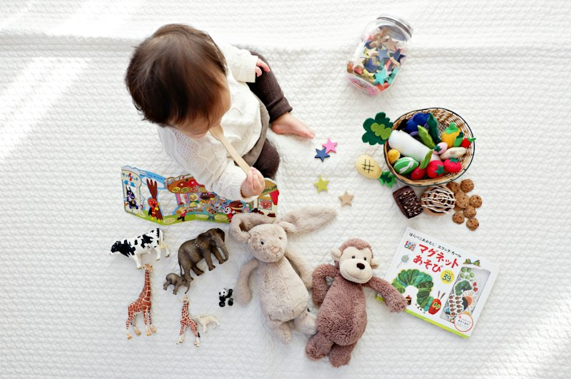
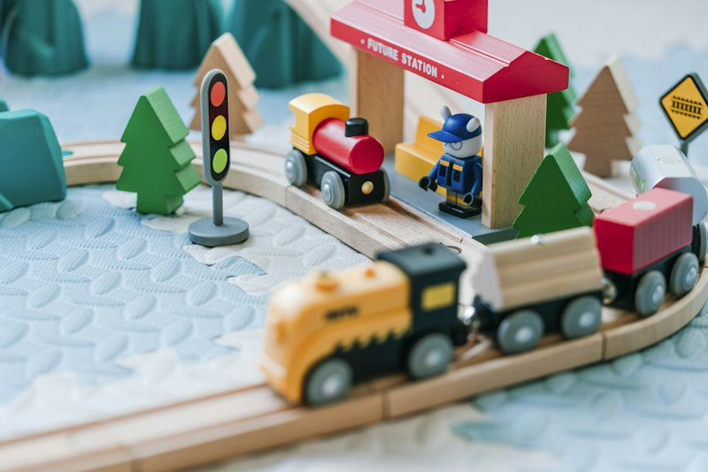
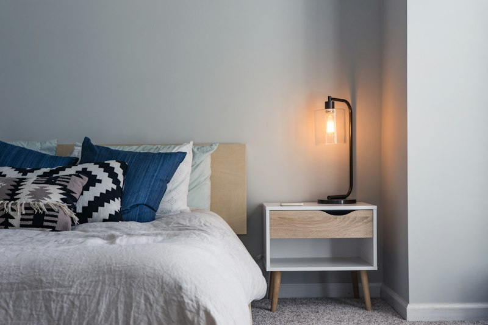

Direto do Nosso Instagram
Acompanhe nossos últimos trabalhos, detalhes de pontos e encomendas entregues que estão encantando famílias pelo Brasil.
Ursinho Soninho Aveludado
Confeccionado em tom bege e verde sálvia com gorrinho macio. Companheiro ideal para o berço.

Boneca Amora com Vestidinho
Cabelos cacheados ponto a ponto e vestidinho removível em rosa chá. Pode ser personalizada com as características da sua princesa.

Coelhinha Orelhinha Macia
Ideal para fotos de newborn e decoração delicada de quarto de bebê. Orelhas compridas perfeitas para as mãozinhas do recém-nascido segurarem.

Kit Mordedor & Chocalho de Madeira
Argola de madeira natural sem verniz combinada com crochê delicado. Estimula os sentidos táteis do bebê com total segurança.

Pontos Fechados & Trama Perfeita
O segredo de um amigurumi que não deforma e não solta enchimento: pontos calibrados à mão com agulha fina e firmeza impecável.

Móbiles & Detalhes de Quarto
Composições personalizadas com nuvens, estrelas e borboletas suspensas em bastidor de madeira natural.